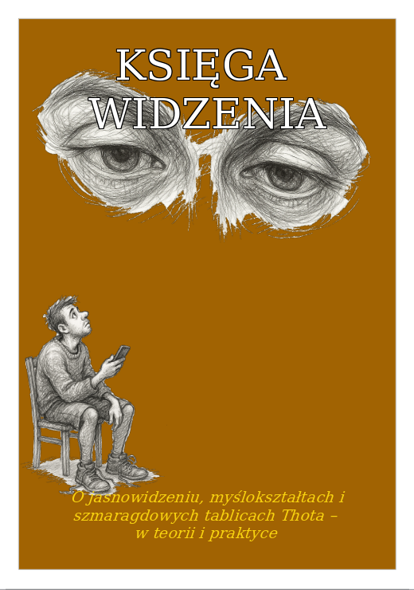

📘 KSIĘGA WIDZENIA
o jasnowidzeniu, myślokształtach i szmaragdowej mądrości Thotha – teoria i praktyka widzenia niewidzialnego
O czym jest ta książka?
„Księga Widzenia” to autorskie opracowanie klasycznych nauk C.W. Leadbeatera, Annie Besant i tradycji przypisywanej Thothowi Atlantydzkiemu – przepisane na język XXI wieku. Nie jest to suchy traktat ezoteryczny, lecz żywy przewodnik po świecie subtelnych zjawisk: myślokształtów, aury, pól energetycznych i duchowej anatomii człowieka.
Autor – DarIJuż / Innowidzący – łączy tradycyjną wiedzę ezoteryczną z nowoczesnym rozumieniem psychologii, świadomości i energii. Zamiast wielkich dogmatów jest tu zaproszenie do osobistego doświadczenia: „Nie wierz – sprawdź, poczuj, zaobserwuj.”
Co znajdziesz w środku?
- Jasnowidzenie – czym jest w praktyce, a czym nie jest (mitologia vs realne zjawisko).
- Myślokształty – jak myśli i emocje tworzą formy w przestrzeni subtelnej.
- Kolory i kształty aury – język barw, ruchu i symboli w polu człowieka.
- Światło i wibracja – jak „światło” rozumiane duchowo łączy się z fizyką i neuropsychologią.
- Szmaragdowa mądrość Thotha – wybrane fragmenty i ich współczesne odczytanie.
- Ćwiczenia praktyczne – stopniowe treningi uważności, wyciszenia i postrzegania subtelnego.
Książka jest napisana językiem prostym, ale nie banalnym. Zamiast „magicznych obietnic” – otrzymasz konsekwentny opis pracy wewnętrznej, która łączy obserwację, etykę i praktykę.
Dla kogo jest „Księga Widzenia”?
Ta książka jest dla Ciebie, jeśli:
- przeczuwasz, że za światem materii stoi coś więcej niż tylko chemia i biologia,
- chcesz rozumieć swoje emocje i myśli również jako energię w ruchu,
- szukasz mostu między duchowością a codziennym życiem, bez sekciarskiego żargonu,
- pociąga Cię język symboli, kolorów, archetypów i starych tradycji mistycznych,
- czujesz, że Twoja wrażliwość jest darem, a nie „problemem do naprawienia”.
To nie jest książka „tylko dla jasnowidzów”. To książka dla osób wrażliwych, refleksyjnych, które chcą zrozumieć jak ich wewnętrzny świat wpływa na rzeczywistość.
Dlaczego ta książka powstała?
Współczesny człowiek jest bombardowany obrazami, informacjami i emocjami, ale rzadko uczy się, jak je przetwarzać. „Księga Widzenia” jest odpowiedzią na to pytanie: jak zadbać o własną higienę energetyczną i emocjonalną, jak nie zatopić się w świecie cudzych myśli i nastrojów.
Autor prowadzi czytelnika od podstaw: od zrozumienia, czym jest aura, jak powstają myślokształty, aż po kwestie zaawansowane – jak świadomie pracować ze światłem, intencją i modlitwą / medytacją.
Fragmenty tematyczne, które szczególnie poruszą wrażliwego czytelnika:
- „Kolory uczuć” – mapa emocji widziana jako spektrum światła.
- „Język niewidzialnego” – jak myśli łączą się w historie światła.
- „Zanieczyszczony język emocji” – o bałaganie energetycznym i wewnętrznym hałasie.
- „Świadome mówienie językiem światła” – praktyczne wskazówki, jak żyć bardziej świadomie.
Forma wydania
Format: cyfrowy e-book (PDF) Dostawa: natychmiastowe pobranie po opłaceniu Wydanie: autorskie, dostępne wyłącznie w oficjalnym sklepie DarIJuż
Jeśli chcesz zajrzeć głębiej…
Na osobnej stronie udostępniony jest obszerny fragment książki – rozdział poświęcony kolorom, kształtom i emocjom jako językowi niewidzialnego świata. Możesz go przeczytać, zanim podejmiesz decyzję o zakupie.